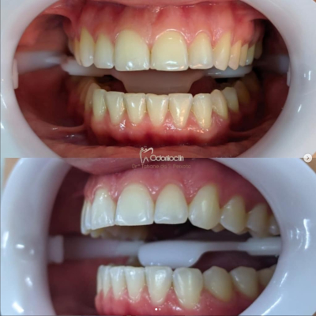
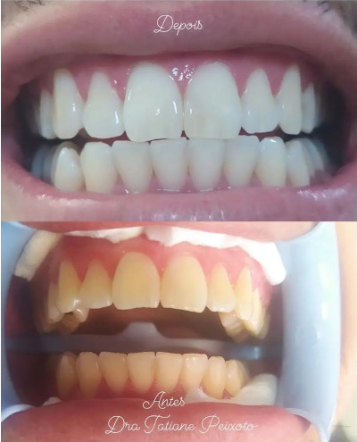
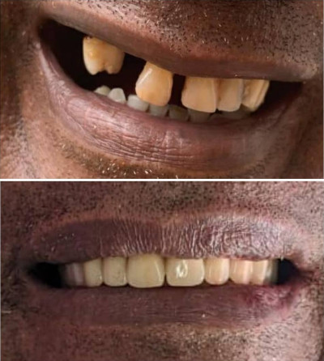

Seus Cuidados
Você consegue sorrir?
Como esta a sua saúde bucal?
Você se cuida?
Você cuida do seu sorriso?
A maioria das pessoas que tiveram um desleixo acabam se arrependendo mais tarde. Cuidar do nosso sorriso é fácil, simples e barato, basta criar HÁBITOS. Hábito de escovar os dentes pelo menos 3x ao dia, hábito de passar o fio dental, hábito de escovar a língua, hábito de ir ao dentista de 6 em 6 meses para fazer uma "limpeza". Com isso você não terá problemas em transmitir um dos mais belos sentimentos através do seu sorriso, que é a alegria. Sorria, porque sorrir faz bem !
Profissionais
-Dra.Tatiane Peixoto
Canal, Implante, Cirurgia, Clareamento e etc...
-Dra.Márcia Peixoto
Aparelho e Clareamento
-Dra.Camila Paixão
Canal e Aparelho
Tratamentos
Canal
-O tratamento de canal é um processo no qual ocorre a retirada da polpa do dente. A polpa é um tecido mole que fica logo abaixo da dentina e do esmalte dentário. Ela é composta por nervos, vasos sanguíneos e fibras.
Implante Dentário
-Implantodontia é um ramo da Odontologia que se destina ao tratamento do edentulismo com reabilitações protéticas suportadas ou retidas por implantes dentários. Com a Implantodontia são feitas desde reabilitações unitárias ate grandes reabilitações totais fixas ou removíveis.
Estética
-É o ramo da odontologia que atua na área da cosmética e restauração dental. Entre outros serviços, os profissionais desta especialidade tratam de clareamentos dos dentes, uso de resinas diretas, facetas, lentes de contato dental, e restaurações estéticas.
Aparelho
-O aparelho ortodôntico ou aparelho dentário, é um dispositivo utilizado por ortodontistas em seus pacientes para fazer o alinhamento dos dentes quando eles se desenvolvem com uma má formação. Serve para corrigir a posição dos dentes para fins estéticos e funcionais.
Cirurgia
-Cirurgia dentária é um dos vários procedimentos médicos que envolvem a modificação artificial da dentição; em outras palavras, cirurgia dos dentes, gengivas e ossos da mandíbula.
Clareamento
-Clareamento dental ou clareamento dentário é um tratamento utilizado para tornar os dentes mais brancos.
Resultados dos Tratamentos
Clareamento
 Implante
